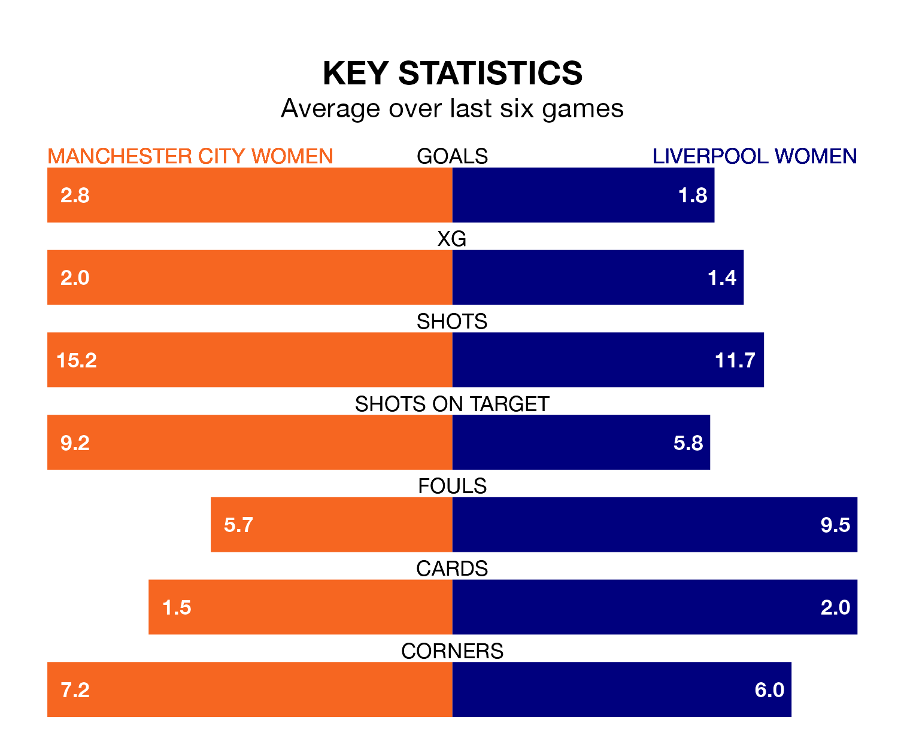

Two of FA Women's Super League's meanest defences go head-to-head at the Academy Stadium on Sunday, when Manchester City Women host Liverpool Women.
No teams have conceded fewer goals than Manchester City to date: the home side have let in just seven goals in 10 games.
Liverpool have conceded 11 goals in 10 games, giving them the joint-third tightest back line so far this season.
Key to City's home form has been Khiara Keating, who has allowed 0.6 goals past him per 90 minutes, compared to 1.14 for Rachael Laws in the opposite net.
In Khadija Monifa Shaw, Manchester City have the league's most on-form striker so far this season. She has notched nine goals in nine appearances.
Liverpool's top scorers, with three goals each, are Sophie Roman Haug and Marie Therese Höbinger.
City are second in the table after 10 games, of which they have won seven and drawn one, earning 22 points.
The away side are three places behind the hosts in fifth, with five wins and three draws putting them on 18 points.
In the last five years, Manchester City and Liverpool have played each other on eight occasions. Manchester City won seven of them and Liverpool one.
On average, City scored 2.2 goals and Liverpool 0.9 in those matches.
Their last meeting was on November 8, when Manchester City won 4-3 away.
Manchester City are in reasonable form in FA Women's Super League, with four wins and two losses from their last six games.
With three wins and two draws over that period, Liverpool's form is slightly worse – they have taken 11 points from 18, compared to Manchester City's 12.
Manchester City's last match was on December 17, a 4-1 win against Everton Women, with Shaw (three) and Jill Roord getting the goals for City.
Liverpool beat Manchester United Women 2-1 last time out, also on December 17, with Millie Turner (own goal) and Taylor Hinds on the scoresheet.
Updated: 11:29, 08/01/24